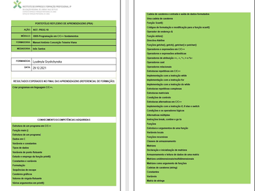

UFCD-0797-Sistemas Operativos-tipologias
Formadora: Célia Maria Pinto Duarte
UFCD-0797-Portefólio-Reflexivo de Aprendizagens
Trabalhos realizados
Tarefa 1. "" Sistemas Operativos - Tipologias"
2. Identificar e distinguir as unidades de armazenamento que utiliza normalmente no seu computador.
Tarefa 1.
Tarefa 3. "Sistemas Operativos"
2. Faça a captura da imagem da sua máquina virtual de Linux Ubuntu e capture uma imagem do Oracle VM VirtualBox Manager, contendo a sua máquina virtual.
3. Use a imagem OVA que lhe foi fornecida para fazer um Import Appliance no Oracle VM Virtual Box. Altere o valor da memória RAM da máquina a importar para 2 GB (2048 MB) e mude-lhe o nome para Ubuntu2.